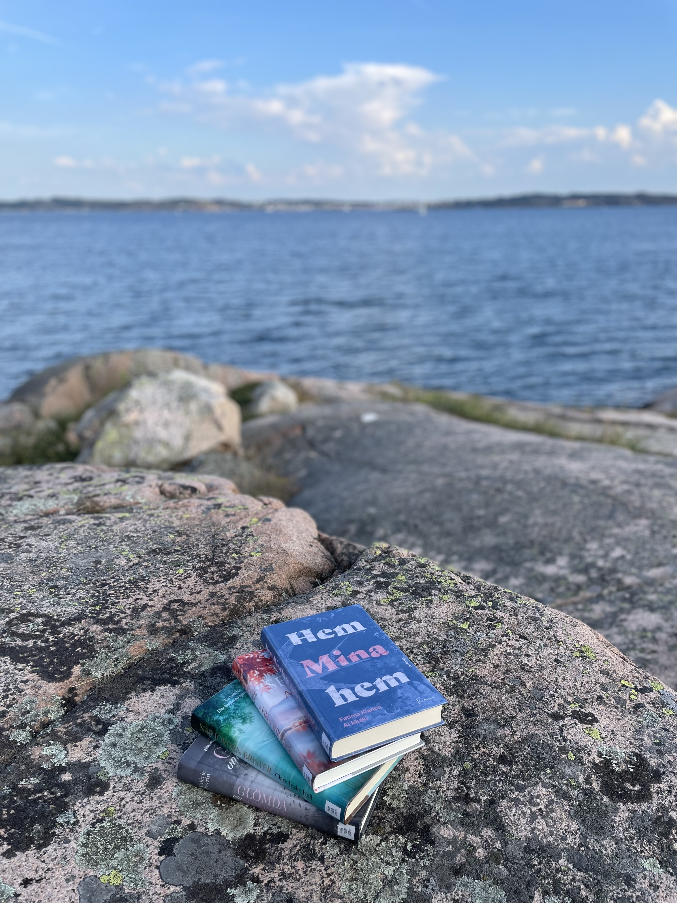

Hej! Jag heter Maria Bärås och arbetar som bibliotekarie i Lysekil. Jag tycker mycket om att läsa, dricka kaffe, vistas i naturen och att lära mig om nya saker som till exempel webbdesign. Välkommen till min testsida! Nedan följer en länk till Biblioteken i Fyrstad där Lysekils bibliotek också ingår.
Biblioteken i Fyrstad Sommarläsning!